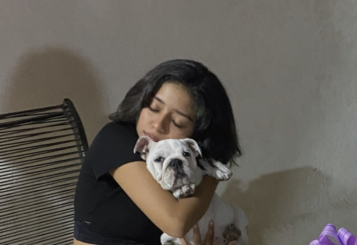

ACERCA DE MI
Nací el 28 de enero del 2004 en Morelia, Michoacán, México. Actualmente tengo 17 años y curso el 4to semestre de preparatoria en el Colegio Anglo en la ciudad y puerto de Lázaro Cárdenas.
Me gusta realizar actividades recreativas y educativas y disfruto mucho de participar en concursos académicos. Me considero una persona dinámica y fácil de acoplarse a cualquier ambiente que se le presente. A lo largo de mi vida he participado en diferentes proyectos, deportes y actividades que ahora me ayudan a ser responsable y disciplinada en cualquier área en la que busque desarrollarme ya sea social o académicamente.
Tengo metas a corto y a largo planeadas con el propósito de irme preparando para lograr cada una de ellas. Algunos ejemplos serían: estudiar medicina, ganar una de las olimpiadas en las que estoy participando y hacer mi examen de Cinta Negra III DAN antes de entrar a la universidad.
He participado en una gran variedad de proyectos y concursos, los que considero más importantes los pueden encontrar en la sección "Proyectos y Concursos".
